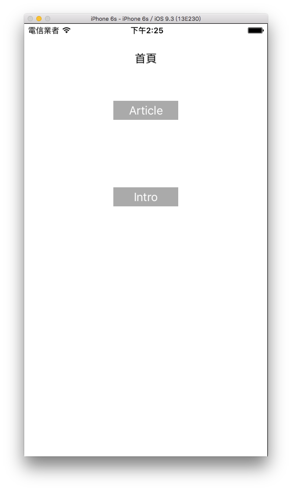

多頁面
前面章節介紹了許多常用的 UIKit 元件，但都是運作在單一個頁面中(也就是單一個 UIViewController ，前面提到過一個 UIViewController 負責了一個頁面的運作。)，這節會介紹如何建立多個頁面，並在這些頁面中切換。
本節的目標如下，建立兩個按鈕，分別會進入不同頁面，兩個頁面都會有回上頁的按鈕， Aritcle 頁裡還會有一個按鈕，可以再進入 Article Detail 頁面：

首先在 Xcode 裡，新建一個 Single View Application 類型的專案，取名為 ExMultiPages 。
一開始先以新增檔案的方式加入三個繼承自 UIViewController 的.swift檔案，分別命名為IntroViewController、ArticleViewController及ArticleDetailViewController。
將上述三個 UIViewController 與ViewController都分別在各自的viewDidLoad()中設置底色，以供後續使用，如下：
// 設置底色
self.view.backgroundColor = UIColor.white
切換頁面
首先在ViewController的viewDidLoad()裡建立一個作為標題的 UILabel 與兩個切換頁面用的 UIButton ：
// 頁面標題
let myLabel = UILabel(frame: CGRect(
x: 0, y: 0, width: fullSize.width, height: 40))
myLabel.center = CGPoint(
x: fullSize.width * 0.5, y: fullSize.height * 0.08)
myLabel.textAlignment = .center
myLabel.text = "首頁"
self.view.addSubview(myLabel)
// 建立前往 Article 頁面的 UIButton
var myButton = UIButton(frame: CGRect(
x: 0, y: 0, width: 100, height: 30))
myButton.setTitle("Article", for: .normal)
myButton.backgroundColor = UIColor.lightGray
myButton.addTarget(
nil, action: #selector(ViewController.goArticle),
for: .touchUpInside)
myButton.center = CGPoint(
x: fullSize.width * 0.5, y: fullSize.height * 0.2)
self.view.addSubview(myButton)
// 建立前往 Intro 頁面的 UIButton
myButton = UIButton(frame: CGRect(
x: 0, y: 0, width: 100, height: 30))
myButton.setTitle("Intro", for: .normal)
myButton.backgroundColor = UIColor.lightGray
myButton.addTarget(nil,
action: #selector(ViewController.goIntro),
for: .touchUpInside)
myButton.center = CGPoint(
x: fullSize.width * 0.5, y: fullSize.height * 0.4)
self.view.addSubview(myButton)
以及在ViewController加上按下按鈕執行動作的方法：
@objc func goArticle() {
self.present(ArticleViewController(),
animated: true, completion: nil)
}
@objc func goIntro() {
self.present(IntroViewController(),
animated: true, completion: nil)
}
上述程式可以看到，切換頁面主要是使用self的方法present(viewControllerToPresent:, animated:, completion:)，參數分別為：
- viewControllerToPresent：要切換前往的頁面，也就是要交棒給予的 UIViewController ，所以上面兩個按鈕按下後就分別前往
ArticleViewController()及IntroViewController()。 - animated：換頁動作是否加上過場動畫，填
true的話會由下向上滑出新的頁面，填false則是直接替換畫面。 - completion：切換頁面完成後執行的動作，這邊是一個閉包( closure )，你可以在裡面加上自定義的程式。
退出頁面
接著看到IntroViewController.swift，一樣是加上一個 UILabel 及一個 UIButton，這個按鈕則是用來退出頁面，程式碼與前述類似，這邊就略過。主要看到按下退出頁面按鈕後執行的動作，在IntroViewController內加上方法，如下：
@objc func goBack() {
self.dismiss(animated: true, completion:nil)
}
上述程式可以看到要退出頁面，是使用self的方法dismiss(animated:, completion:)，參數分別如下：
- animated：換頁動作是否加上過場動畫，填
true的話會由上向下退出頁面，填false則是直接替換畫面。 - completion：切換頁面完成後執行的動作，這邊是一個閉包( closure )，你可以在裡面加上自定義的程式。
Article 要進到 Article Detail 也是如前述一樣的方式，這邊就省略，完整內容請參考範例程式碼。
頁面開啟退出的過程
這節還要介紹一個功能，就是在頁面開啟及退出的各個階段，你都可以加入自定義的程式，在首頁ViewController裡面你可以看到如下幾個方法：
override func viewWillAppear(_ animated: Bool) {
super.viewWillAppear(animated)
print("viewWillAppear")
}
override func viewDidAppear(_ animated: Bool) {
super.viewDidAppear(animated)
print("viewDidAppear")
}
override func viewWillDisappear(_ animated: Bool) {
super.viewWillDisappear(animated)
print("viewWillDisappear")
}
override func viewDidDisappear(_ animated: Bool) {
super.viewDidDisappear(animated)
print("viewDidDisappear")
}
這些方法加上一開始的viewDidLoad()分別會在不同階段執行，執行的順序如下：
- viewDidLoad()：最先被執行，時間點在 View 被載入時，不論切換退出這個頁面幾次，一個頁面只會執行一次
viewDidLoad()。 - viewWillAppear()：在
viewDidLoad()之後被執行，時間點在 View 要被呈現前，每次切換到這個頁面時都會執行。 - viewDidAppear()：在
viewWillAppear()之後被執行，時間點在 View 呈現後，每次切換到這個頁面時都會執行。 - viewWillDisappear()：執行的時間點在 View 要結束前，每次要切換到別頁或是退出這個頁面時都會執行。
- viewDidDisappear()：執行的時間點在 View 完全結束後，每次要切換到別頁或是退出這個頁面時都會執行。
以上方法可以依照需求寫入不同的程式。例如，如果每次進入一個頁面都需要更新資訊，那這個更新資訊的動作就應該放在viewWillAppear()裡而不是viewDidLoad()內。
以上即為本節範例的內容。
範例
本節範例程式碼放在 uikit/multipages